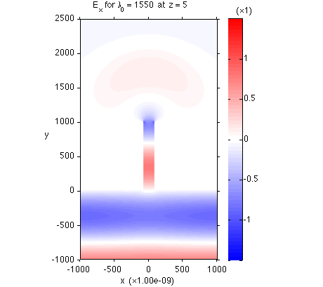
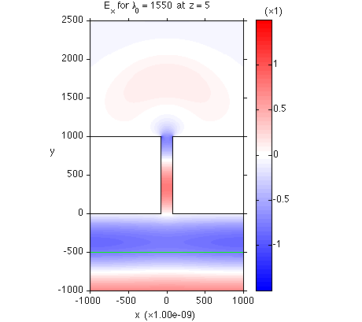
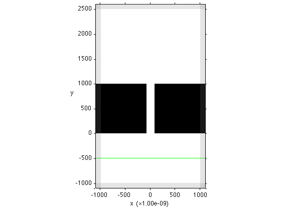

Basic Usage
This document introduces the basic usage of MaxwellFDFD with example codes.
Contents
Example Code
We start with a simple example code that solves a 2D problem, which is to examine the transmission of a plane wave through a narrow slit:
[E, H] = maxwell_run(... 'OSC', 1e-9, 1550, ... 'DOM', {'vacuum', 'none', 1.0}, [-1100 1100; -1100 2600; 0 10], 10, BC.p, [100 100 0],... 'OBJ', {'CRC/Ag', 'k'}, ... Box([-1100 -80; 0 1000; 0 10]), ... Box([80 1100; 0 1000; 0 10]), ... 'SRCJ', PlaneSrc(Axis.y, -500, Axis.x));
The above is actually one line of code; the ellipsis ... at the end of each line is MATLAB's way of indicating the continuation of a line. Upon execution, this code calculates the solution E- and H-fields of the problem. The solutions are stored in the variables E and H, which are the outputs of maxwell_run, MaxwellFDFD's core function, that takes a long list of arguments describing the problem.
Visualizing the Solution
Before discussing the details of the arguments of maxwell_run, let's first visualize the solution to understand the problem we are solving better. This can be done by another simple line of code:
vis2d(E{Axis.x}, Axis.z, 5);
which produces a figure that looks like:

Note that the PML regions are excluded from the plot by default.
Visualizing of Objects and Sources
The above field plot would have been much more informative if it was overlaid with the objects and source placed in the simulation domain. The arrays of the objects and sources can be obtained from maxwell_run by changing the output arguments as:
[E, H, obj_array, src_array] = maxwell_run({ARGUMENTS});
These objects and sources (actually only one source for the present problem) are drawn on top of the field plot when they are supplied to vis2d as extra input arguments as
vis2d(E{Axis.x}, Axis.z, 5, obj_array, src_array);
The modified code will produce an updated figure that looks like:

The black lines indicate the boundaies of the metal pieces, and green line indicates the location of the source plane.
Input Arguments of maxwell_run
maxwell_run takes many input arguments that are grouped into several parameter groups. Each parameter group is specified by 'NAME' (such as 'OSC', 'DOM', 'OBJ', 'SRCJ') that is followed by the arguments in the parameter group. Below, the meanings of the arguments used in the above example code are explained for each parameter group.
'OSC' specifies the oscillation parameter group, which describes the wavelength of the source.
- 1e-9: the unit of wavelength is 1 nm (= 1e-9 m).
- 1550: the wavelength is 1550 nm.
The unit of wavelength specified in this parameter group serves as the unit of all the length arguments of maxwell_run.
'DOM' specifies the domain parameter group, which describes the simulation domain of the problem.
- {'vacuum', 'none', 1.0}: the background material that fills the simulation domain is named 'vacuum' (just a user-defined name), will be visualized with color 'none' (i.e., the material will not be shown in the figure generated by vis2d), and its dielectric constant is 1.0.
- [-1100 1100; -1100 2600; 0 10]: the simulation domain lies between -1100 and 1100 nm in the x-direction, -1100 and 2600 nm in the y-direction, 0 and 10 nm in the z-direction.
- 10: the coarsest grid size used to descritize the simulation domain is 10 nm.
- BC.p: periodic boundary conditions are used in all the x-, y-, z-directions.
- [100 100 0]: the thicknesses of PML are 100 nm at the x- and y-normal boundaries, and no PML is used at the z-normal boundaries. The simulation domain except PML lies between -1000 and 1000 nm in the x-direction, -1000 and 2500 nm in the y-direction, 0 and 10 nm in the z-direction.
'OBJ' specifies the object parameter group, which describes the objects placed in the simulation domain.
- {'CRC/Ag', 'k'}: the material used to create objects has frequency-dependent dielectric constants defined in the file Ag.mat under the subdirectory dielconst/CRC/ under the main MaxwellFDFD directory. (In fact, the dielectric constants are taken from the silver data in the CRC handbook.) When the objects made of this material are plotted, they will be colored black (whose MATLAB color code is 'k').
- Box([-1100 -80; 0 1000; 0 10]): place a box made of the material. The box lies between -1100 and -80 nm in the x-direction, 0 and 1000 nm in the y-direction, 0 and 10 nm in the z-direction.
- Box([80 1100; 0 1000; 0 10]): place another box made of the material.
'SRCJ' specifies the J source parameter group, which describes the electric current sources placed in the simulation domain.
- PlaneSrc(Axis.y, -500, Axis.x)): at y = -500 nm, place a plane of electric dipoles oscillating in the x-direction.
Note that the order of appearance of the parameter groups in maxwell_run is interchangeable; for example, you can put the source parameter group before the object parameter group, and vice versa.
Inspecting the Design before Solution
The above example is simple, so it does not hurt to solve the problem without making sure that the system you described with the arguments of maxwell_run is indeed what you intended to examine. However, for larger and more complex problems, the solution process can be time-consuming. Therefore, in general it is a good practice to inspect the design before solving the problem.
You can command maxwell_run to visualize the simulation domain without solving the problem by appending a logical argument (true or false) as:
[E, H, obj_array, src_array] = maxwell_run({PARAMETER GROUPS}, true);
The above code does not return solution E- and H-fields in the output arguments E and H, i.e., E and H are empty, but it produces the following figure:

The above figure visualizes the objects and source in the simulation domain, including the PML regions.
Complete Code
Below is the complete code that has everything discussed in this document. Note that vis2d works only if the last argument of maxwell_run is flipped to false to calculate the solution.
[E, H, obj_array, src_array] = maxwell_run(... 'OSC', 1e-9, 1550, ... 'DOM', {'vacuum', 'none', 1.0}, [-1100 1100; -1100 2600; 0 10], 10, BC.p, [100 100 0],... 'OBJ', {'CRC/Ag', 'k'}, ... Box([-1100 -80; 0 1000; 0 10]), ... Box([80 1100; 0 1000; 0 10]), ... 'SRCJ', PlaneSrc(Axis.y, -500, Axis.x), ... false); % true to inspect arguments without solving equation vis2d(E{Axis.x}, Axis.z, 5, obj_array, src_array);